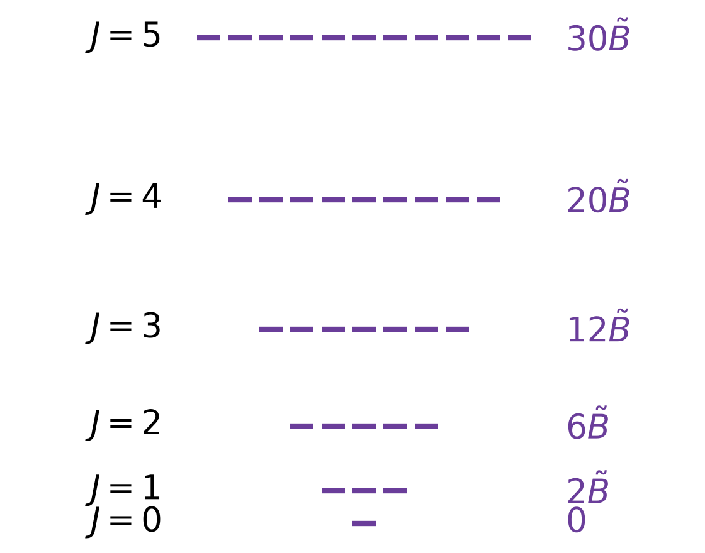
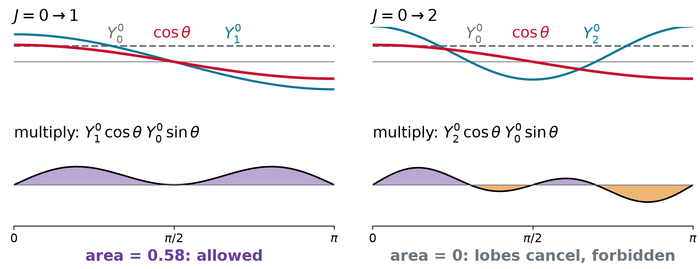
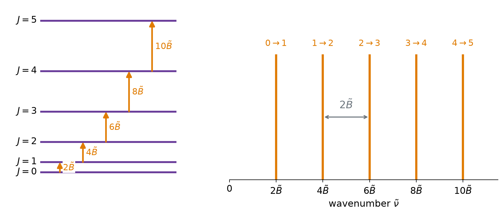
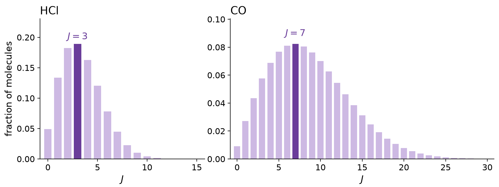
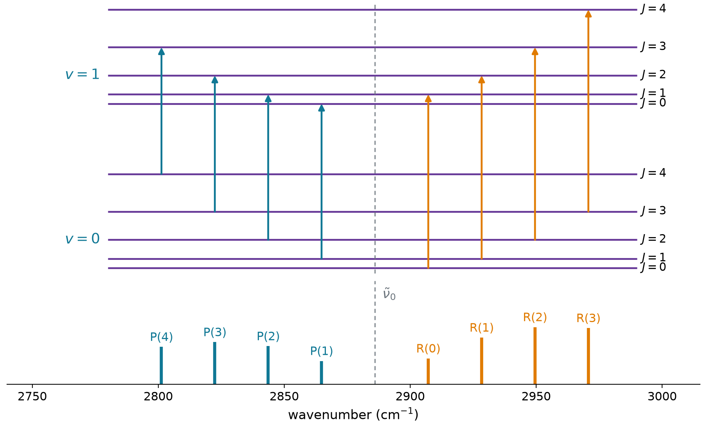

The Rigid Rotor
Chem 3240 · Lecture 4.5
A rotating molecule is a particle on a sphere

\hat{H} = \frac{\hat{L}^2}{2I}, \qquad I = \mu R_e^2
- Fixed bond length, no potential: all the energy is rotation. Lecture 4.4 already solved it
The rigid rotor

\hat{H}\,Y_J^{M_J} = E_J\,Y_J^{M_J}
E_J = \frac{\hbar^2}{2I}\,J(J+1)
J = 0, 1, 2, \dots \qquad M_J = -J, \dots, J
- 2J + 1 states per level, one for each M_J
- Gaps of 2, 4, 6, \dots times \hbar^2/2I: they grow
- J = 0 has E = 0: no zero-point rotation
- J and M_J are the l and m of Lecture 4.4
The rotational constant
F(J) = \frac{E_J}{hc} = \tilde{B}\,J(J+1), \qquad \tilde{B} = \frac{h}{8\pi^2cI}
| molecule | \tilde{B} (cm^{-1}) | vibration \tilde{\nu} (cm^{-1}) | k_BT/hc\tilde{B} at 300 K |
|---|---|---|---|
| H_2 | 60.9 | 4161 | 3.4 |
| HCl | 10.6 | 2886 | 20 |
| CO | 1.93 | 2143 | 108 |
| I_2 | 0.037 | 213 | 5600 |
- Rotation is cheap: \tilde{B} \ll k_BT = 208 cm^{-1}, so many J levels are occupied
Example: the rotational constant of HCl
H^{35}Cl: R_e = 127.5 pm, \mu = 0.9796 u. Find I, \tilde{B} and the energy of J = 1.
I = \mu R_e^2 = (1.6266\times10^{-27}\ \text{kg})(127.5\times10^{-12}\ \text{m})^2 = 2.644\times10^{-47}\ \text{kg m}^2
\tilde{B} = \frac{h}{8\pi^2cI} = 10.59\ \text{cm}^{-1}, \qquad F(1) = 2\tilde{B} = 21.2\ \text{cm}^{-1}
- In J = 1: L = \sqrt{2}\,\hbar, and L_z is -\hbar, 0 or +\hbar
A rotating dipole is an antenna
\langle J'M_J'|\hat{M}_z|JM_J\rangle = M_e\int Y_{J'}^{M_J'*}\,\cos\theta\;Y_J^{M_J}\,\sin\theta\,d\theta\,d\phi
- The dipole M_e points along the bond: as the molecule turns, the dipole turns with it
- No dipole, no microwave spectrum: H_2, N_2, O_2, CO_2, CH_4 are silent; HCl, CO, H_2O absorb
One rung at a time

M_e \neq 0, \qquad \Delta J = \pm 1, \qquad \Delta M_J = 0, \pm 1
- \cos\theta\,Y_J^{M_J} mixes only Y_{J\pm1}^{M_J}. The photon carries one unit \hbar of angular momentum
The microwave spectrum
\tilde{\nu}_J = F(J+1) - F(J) = \tilde{B}\,\big[(J+1)(J+2) - J(J+1)\big]
\tilde{\nu}_J = 2\tilde{B}\,(J+1), \qquad \tilde{\nu}_{J+1} - \tilde{\nu}_J = 2\tilde{B}

Example: the bond length of CO
CO absorbs at 3.845, 7.690 and 11.535 cm^{-1} (115, 231, 346 GHz). Find its bond length (\mu = 6.856 u).
2\tilde{B} = 3.845\ \text{cm}^{-1} \;\Longrightarrow\; \tilde{B} = 1.9225\ \text{cm}^{-1}
I = \frac{h}{8\pi^2c\tilde{B}} = 1.456\times10^{-46}\ \text{kg m}^2
R = \sqrt{\frac{I}{\mu}} = \sqrt{\frac{1.456\times10^{-46}}{1.1385\times10^{-26}}}\ \text{m} = 113.1\ \text{pm}
- Radio astronomers map the cold gas between the stars with CO’s 115 GHz line
Populations
\frac{N_J}{N_0} = (2J+1)\,e^{-hc\tilde{B}J(J+1)/k_BT}

- Degeneracy rises, Boltzmann falls: HCl peaks at J = 3, CO at J = 7
Rotation rides on vibration
\tilde{E}(v, J) = \tilde{\nu}\left(v + \tfrac{1}{2}\right) + \tilde{B}\,J(J+1), \qquad \Delta v = +1, \quad \Delta J = \pm 1

The P and R branches
\tilde{\nu}_R(J) = \tilde{\nu}_0 + 2\tilde{B}\,(J+1), \qquad \tilde{\nu}_P(J) = \tilde{\nu}_0 - 2\tilde{B}\,J
- R (\Delta J = +1) above the band origin \tilde{\nu}_0, P (\Delta J = -1) below
- No line at \tilde{\nu}_0: \Delta J = 0 is forbidden, so R(0) and P(1) are 4\tilde{B} apart
- Each branch rises and falls with the populations of its starting levels
Example: reading the HCl band
The lines next to the gap are R(0) = 2906.25 and P(1) = 2865.10 cm^{-1}. Find \tilde{\nu}_0 and \tilde{B} (rigid rotor).
\tilde{\nu}_0 = \frac{2906.25 + 2865.10}{2} = 2885.68\ \text{cm}^{-1}
\tilde{B} = \frac{2906.25 - 2865.10}{4} = 10.29\ \text{cm}^{-1}
- The microwave value is \tilde{B}_0 = 10.44 cm^{-1}: the bond is a little longer in v = 1
Beyond the rigid rotor
The bond is longer in v = 1
\tilde{B}_v = \tilde{B}_e - \alpha_e\left(v + \tfrac{1}{2}\right) \qquad \text{HCl: } \tilde{B}_0 = 10.44,\ \tilde{B}_1 = 10.14\ \text{cm}^{-1}
Fast rotation stretches the bond
F(J) = \tilde{B}\,J(J+1) - \tilde{D}\,J^2(J+1)^2, \qquad \tilde{D} \approx \frac{4\tilde{B}^3}{\tilde{\nu}^2}
- R lines crowd, P lines spread, high-J levels fall slightly. Both are small at low J
Live: temperature and the spectrum
Takeaway
A diatomic with a fixed bond length is a particle on a sphere: E_J = \hbar^2J(J+1)/2I, with 2J+1 states per level and no zero-point rotation. In wavenumbers F(J) = \tilde{B}J(J+1) with \tilde{B} = h/8\pi^2cI. A permanent dipole and \Delta J = \pm 1 give microwave lines evenly spaced by 2\tilde{B}, which measure bond lengths, with heights that follow the populations (2J+1)e^{-hcF(J)/k_BT}. In the infrared, rotation rides on vibration: P and R branches around a gap at the band origin.
Chem 3240 · Quantum Mechanics